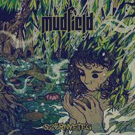

Szörnyeteg

A szörnyeteg címre hallgató nagylemezük 2021. December 23-án jelent meg, ami a 3. volt a sorban. Az albumon 10 nóta lehető fel, köztük a Dal fesztiválon döntős helyezést elnyerő
Dalok
- Ébresztő
- Szív
- Menedék
- Nincsen Szerencsém
- Káros Szenvedély
- Őrláng
- Hajnali Idegen
- Új generáció
- Szörnyeteg
- Napfénytenger